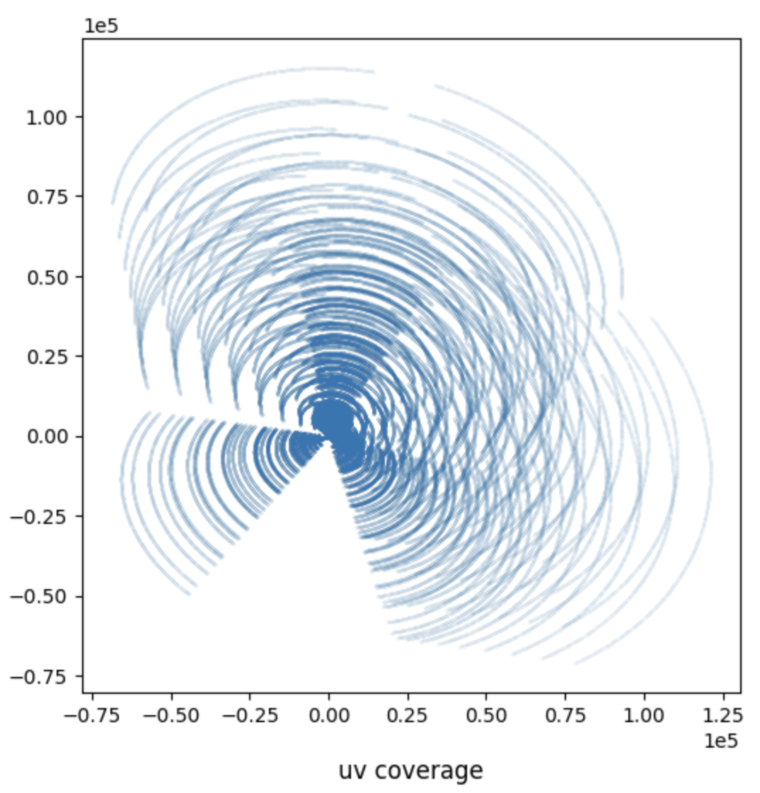
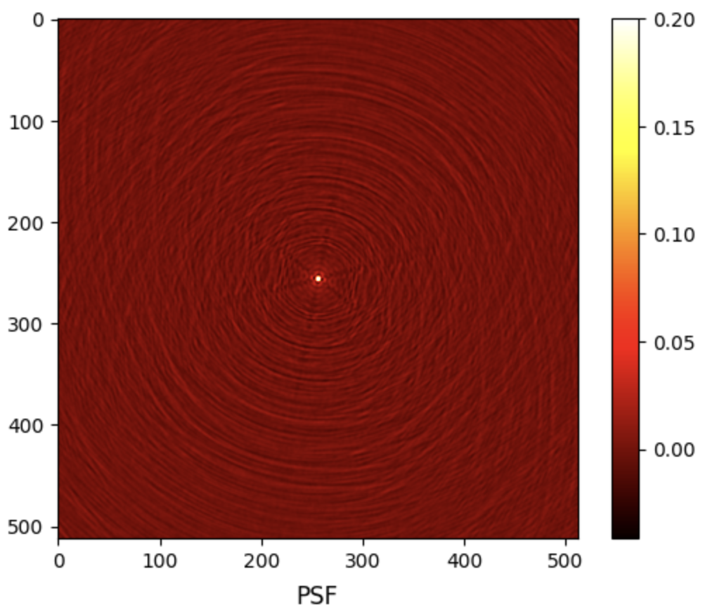
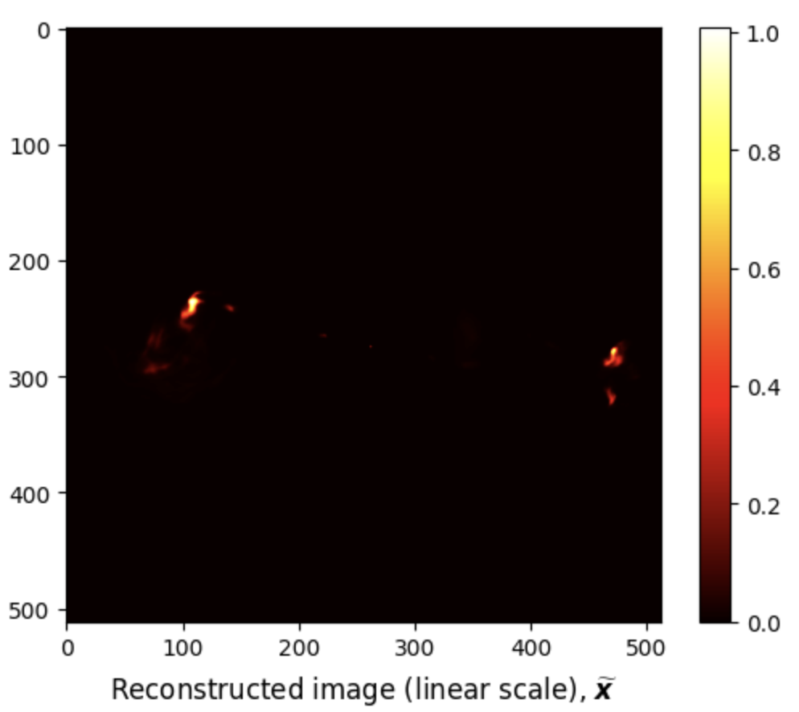

R2D2 Tutorial
Imaging with R2D2
The R2D2 algorithm takes a hybrid structure between a Plug-and-Play algorithm and a learned version of
the well known Matching Pursuit algorithm. Its reconstruction is formed as a series of residual images,
iteratively estimated as outputs of iteration-specific Deep Neural Networks (DNNs) taking the previous
iteration’s image estimate and associated data residual as inputs. R2D2's primary application is to solve
inverse problems in synthesis imaging by interferometry (SII). The details of R2D2 are discussed in the
following papers.
[1] Aghabiglou, A., Chu, C. S., Dabbech, A. & Wiaux, Y.,
The R2D2 deep neural network series paradigm for fast precision imaging in radio astronomy, ApJS, 273(1):3, 2024.
[2] Dabbech, A., Aghabiglou, A., Chu, C. S. & Wiaux, Y.,
CLEANing Cygnus A deep and fast with R2D2,
ApJL, 2024 May 7;966(2):L34.
In this tutorial, we focus on a Python implementation of R2D2 for small-scale monochromatic intensity imaging in SII from the environment setup, to imaging.
SII Inverse Problem
The imaging inverse problem in SII can be formulated as: \[ {\boldsymbol{y}} = {\boldsymbol{\Phi} {\boldsymbol{\bar{x}}} + \boldsymbol{n}} \] where \(\boldsymbol{y} \in \mathbb{C}^M\) is the measurement vector, \(\boldsymbol{\bar{x}} \in \mathbb{R}^N\) is the unknown radio image, \(\boldsymbol{\Phi} \in \mathbb{C}^{N \times M}\) is the measurement operator corresponding to incomplete Fourier sampling, and \(\boldsymbol{n} \in \mathbb{C}^M\) is a realisation of a white Gaussian noise with standard deviation \(\tau\) and mean 0.
The SII inverse problem can be formulated in the image domain via back-projection of the measurements using the adjoint of the measurement operator \(\boldsymbol{\Phi}^\dagger\). The image-domain data, known as the dirty image, reads: \[\boldsymbol{x}_{\textrm{d}} =\kappa \text{Re}\{\boldsymbol{\Phi}^\dagger \boldsymbol{y}\}= \kappa \text{Re}\{\boldsymbol{\Phi}^\dagger \boldsymbol{\Phi}\boldsymbol{\bar{x}}+\boldsymbol{\Phi}^\dagger \boldsymbol{n}\}\] where \(\textrm{Re}\{\cdot\}\) denotes the real part of its arugment, and \(\kappa>0\) is a normalisation factor ensuring the maximum value of the point spread function (PSF), given by \(\kappa \text{Re}\{\boldsymbol{\Phi}^\dagger \boldsymbol{\Phi}\boldsymbol{\delta}\}\), is equal to 1, with \(\boldsymbol{\delta}\) denoting the image with value 1 at its center pixel and 0 otherwise.
R2D2's Iteration Structure
The R2D2 algorithm consists of a series of \(I\) DNNs interleaved with \(I-1\) data consistency layers. Each DNN \(\boldsymbol{N}_{\widehat{\boldsymbol{\theta}}^{(i)}}\), parametrised by \(\widehat{\boldsymbol{\theta}}^{(i)}\), takes the previous iteration's image estimate and associated residual dirty image as input. The image estimate and residual dirty image are initialised such that \(\boldsymbol{x}^{(0)}=0\) and \(\boldsymbol{r}^{(0)}=\boldsymbol{x}_d\). At each iteration \(i \leq I\), the residual dirty image is given by: \[\boldsymbol{r}^{(i-1)} = \boldsymbol{x}_d - \kappa \textrm{Re} \{\boldsymbol{\Phi}^\dagger \boldsymbol{\Phi}\} \boldsymbol{x}^{(i-1)}.\] The image estimate is then updated from the output of the DNN \(\boldsymbol{N}_{\widehat{\boldsymbol{\theta}}^{(i)}}\) as: \[\boldsymbol{x}^{(i)} = \boldsymbol{x}^{(i-1)} + \boldsymbol{N}_{\widehat{\boldsymbol{\theta}}^{(i)}}(\boldsymbol{x}^{(i-1)}, \boldsymbol{r}^{(i-1)}).\] The R2D2 algorithm takes multiple variants:
- R2D2, a DNN series whose DNNs take the well knwon U-Net architecture.
- R2D2-Net, an end-to-end DNN, unrolling the R2D2 algorithm itself. Its architecture consists of \(J\) U-Net layers, interleaved with \(J-1\) approximate data consistency layers.
- R3D3, a DNN series whose DNNs take the R2D2-Net architecture. R3D3 is short for ''Russian Doll R2D2'' in reference to its nesting structure.
R2D2 Repository & Dependencies
To start with, clone the repository to the current directory by running the command below in your preferred terminal:

git clone https://github.com/basp-group/R2D2-SII.git cd ./R2D2-SII
Set up the directory of the virtual environment to be installed, named here as r2d2_env:
python -m venv ../r2d2_envThen, activate the virtual environment by:
- On macOS/Linux:
source ../r2d2_env/bin/activate- On Windows::
..\r2d2_env\Scripts\activate
PyTorch and torchvision should be installed as per the guidelines of PyTorch to ensure the latest version compatible with your CUDA version is installed. If your CUDA version is older than 11.8, then, refer to these guidelines.
- For example, to install PyTorch with CUDA version 11.6 (OS: Linux/Windows), use the command below:
pip install torch==1.13.1+cu116 torchvision==0.14.1+cu116 --extra-index-url https://download.pytorch.org/whl/cu116- On macOS:
pip install torch==1.13.1 torchvision==0.14.1 torchaudio==0.13.1
All other required Python packages are listed in the requirements file. Python version 3.10 or higher is required.
Install the packages using the command below:
pip install -r requirements.txtPre-trained R2D2 Variants
The pre-trained variants of the R2D2 algorithm are available at the DOI:10.17861/99cbe654-5071-4625-b59d-a26c790cbeb4. They are trained using Fourier sampling patterns from the VLA (combining its configurations A and C) for the formation of images of size \(N = 512\times512\), under the following imaging settings:
- a pixel size corresponding to a super-resolution factor of \(1.5\) (see Section: Imaging with R2D2 for details),
- Briggs weighting with Briggs (robust) parameter \(0\) is applied to the measurements.
The pre-trained variants are:
- R2D2 series composed of \(I=15\) U-Nets,
- R3D3 series composed of \(I=7\) R2D2-Nets, each with \(J=3\) U-Net layers,
- R3D3 series composed of \(I=8\) R2D2-Nets, each with \(J=6\) U-Net layers.
The R2D2-Net variant of the R2D2 algorithm corresponds to the first DNN of the R3D3 series.
In this tutorial, we focus on R2D2 series. Same instructions apply for R3D3 series and R2D2-Net.
First, create the directory storing the pre-trained DNNs in the project directory:
mkdir ./ckptThen, download and unzip the compressed file of R2D2 DNN series:
# Desired R2D2 checkpoints dir. r2d2_ckpt_path="./ckpt/v1_R2D2_15UNets/" mkdir -p $r2d2_ckpt_path # Download R2D2 checkpoint wget https://researchportal.hw.ac.uk/files/110702953/v1_R2D2_15UNets.zip -P ./ckpt # Extract the files unzip ./ckpt/v1_R2D2_15UNets.zip -d ./ckpt # Remove the zip file rm ./ckpt/v1_R2D2_15UNets.zip # update dir. name mv ./ckpt/all $r2d2_ckpt_path
Note: Please note that the "wget" and "unzip" commands should be installed beforehand.
Test Dataset
In this tutorial, we provide a test dataset, located in ./data/3c353/, composed of a
ground truth in .fits format and its associated measurement file in .mat format. The ground
truth is a post-processed image of the radio galaxy 3c353 of size \(N = 512 \times 512\), which can be
found in ./data/3c353/3c353_GTfits.fits. The measurements are simulated using VLA antenna
configurations A and C.
First, let us read and visualise the ground truth \(\bar{\boldsymbol{x}}\) using the following Python code:
from astropy.io import fits import matplotlib.pyplot as plt # Load ground truth image gdth = fits.getdata('data/3c353/3c353_GTfits.fits') # Plot ground truth image fig, ax = plt.subplots() pcm = ax.imshow(gdth, cmap='afmhot') cb = plt.colorbar(pcm, ax=ax) title = ax.set_title(r'Ground Truth (linear scale), $\overline{\boldsymbol{x}}$', y=-0.15) # Show plot plt.show()

Given the high dynamic range of the ground truth \(\bar{\boldsymbol{x}}\), only bright features are visible in linear scale. For a better visualisation, we map its pixel intensities to the logarithmic scale using the function: \[\textrm{rlog}(\boldsymbol{\bar{x}}) = \boldsymbol{\bar{x}}_{\textrm{max}} \log_{a}(\frac{a}{\boldsymbol{\bar{x}}_{\textrm{max}}} \boldsymbol{\bar{x}} + \boldsymbol{1}),\] where \(a\) is its dynamic range, and \(\bar{\boldsymbol{x}}_{\textrm{max}}\) is its maximum intensity value. For the considered image, \(a = 10^5\) and \(\bar{\boldsymbol{x}}_{\textrm{max}} = 1.0\).
import numpy as np import matplotlib.colors as colors # Define rlog class rlog(colors.Normalize): def __init__(self, a): self.a = a super().__init__(vmin=None, vmax=None, clip=False) def __call__(self, im): if len(im) == 0: return im im_max = np.max(im) if im_max < 1/self.a: return im else: return im_max * np.log10(self.a * im / im_max + 1) / np.log10(self.a) def inverse(self, im): return (self.a**(im) - 1) / self.a # Image dynamic range a = 1e5 # Plot image fig, ax = plt.subplots() pcm = ax.imshow(gdth, norm=rlog(a), cmap='hot') cb = plt.colorbar(pcm, ax=ax) ticks = [np.log10(a * tick + 1) / np.log10(a) for tick in [0, 1e-4, 1e-3, 1e-2, 1e-1, 1]] ticks[-1] = 1 cb.set_ticks(ticks) cb.set_ticklabels(['0', '$10^{-4}$', '$10^{-3}$', '$10^{-2}$', '$10^{-1}$', '1']) title = ax.set_title(r'Ground Truth (log scale), $\text{rlog}(\overline{\boldsymbol{x}})$', y=-0.15) # Show plot plt.show()

The test measurement file ./data/3c353/data_3c353.mat associated with the above ground
truth can be loaded using the following Python code:
from scipy.io import loadmat # Load data meas = loadmat('data/3c353/data_3c353.mat') for k, v in meas.items(): if not k.startswith('_'): if max(v.shape) == 1: print(f"{k}: {v.item():.4e}") else: print(f"{k}: {v.shape}, {type(v)}")
u: (209840, 1), <class 'numpy.ndarray'>
v: (209840, 1), <class 'numpy.ndarray'>
maxProjBaseline: 1.2216e+05, <class 'float'>
w: (209840, 1), <class 'numpy.ndarray'>
y: (209840, 1), <class 'numpy.ndarray'>
nW: 3.4893e+01, <class 'float'>
nWimag: (209840, 1), <class 'numpy.ndarray'>
The expected input variables are:
- "y", measurement/data vector.
- "u": \(\boldsymbol{u}\) coordinates in units of the observation wavelength.
- "v": \(\boldsymbol{v}\) coordinates in units of the observation wavelength.
- "w": \(\boldsymbol{w}\) coordinates in units of the observation wavelength.
- "nW": noise-whitening vector, known as the natural weights, corresponding to the inverse of the noise standard deviation. During imaging, these weights are applied to the measurements and injected into the measurement operator model.
- "nWimag": imaging weight vector, compensating for the non-uniform Fourier sampling and enhancing the effective resolution of the observations. The vector is optional and can be computed directly in the R2D2 imager.
- "frequency": the observation frequency in Hz.
- "maxProjBaseline": is the maximum projected baseline in units of the observation wavelength, formally it equals to max \(\max\{\sqrt{\boldsymbol{u}^2 + \boldsymbol{v}^2}\}\). Hence, it represents the spatial bandwidth of the Fourier sampling.
The collection of the points \((\boldsymbol{u}, \boldsymbol{v})\) constitutes the 2D Fourier sampling pattern also known as the \(uv\)-coverage which can be visualised using the following Python code:
import matplotlib.pyplot as plt # Plot the 2D Fourier sampling pattern fig, ax = plt.subplots(figsize=(6, 6)) pcm = ax.scatter(meas['u'], meas['v'], s=1e-3) title = ax.set_title('uv coverage', y=-0.15) plt.ticklabel_format(style='sci', axis='both', scilimits=(0,0)) # Show plot plt.show()

Scripts to generate synthetic measurement files as well as to convert real Measurement Sets (MS) to .mat files readable by this repository are available.
Imaging with R2D2
R2D2 imager is launched via the Python file ./src/imager.py. This file takes as input a
configuration file in .yaml format, where all parameters involved in the imaging process,
including the path to the input measurement file, are defined and set to default values where relevant.
The readers are directed to the
README for more information
on the content of the configuration file.
For this tutorial, we use the example configuration file ./config/imaging/R2D2.yaml. The imager file also accepts
optional name-argument pairs to overwrite corresponding fields in the configuration file.
The user must provide as input the target image size and the super-resolution factor, in the configuration file.
The super-resolution factor is defined as the ratio between the spatial Fourier bandwidth of the
target/ ground truth image and the bandwidth of the Fourier sampling pattern (i.e. the maximum projected baseline).
The corresponding pixel size in arcsecond is then obtained as:
\[\textrm{imPixelSize} = \frac{180 \times 3600}{\pi} \times \frac{1} {2 \times\textrm{maxProjBaseline} \times {\textrm{superresolution}
}}\]
Under these settings, the R2D2 imager can be run by calling the following command from the terminal:
python ./src/imager.py --yaml_file ./config/imaging/R2D2.yamlR3D3 can be easily run by changing the input parameters:
-
ckpt_path: the directory containing the DNN checkpoints. -
series: the series variant,R2D2orR3D3, default toR2D2. -
layers: the number of U-Net layers in the DNNs, \(J\), default to 1. -
num_iter: the number of DNNs in the series, \(I\), default to 15.
R2D2-Net takes the same parameters as R3D3 except for the number of iterations which must be set to num_iter=1.
These parameters can be updated in the configuration file or directly as additional arguments to the command above.
R2D2 Results
R2D2 imager provides as output both the PSF and the dirty image, saved in .fits format. They can be visualised using the following Python code:
from astropy.io import fits import matplotlib.pyplot as plt import numpy as np dirty = fits.getdata('results/3c353/dirty.fits') # Set upper and lower limits for the data dirty_upper_lim = np.percentile(dirty, 99.75) dirty_lower_lim = np.percentile(dirty, 0.25) # Clip the data to these limits dirty = np.clip(dirty, dirty_lower_lim, dirty_upper_lim) # Plot the dirty image fig, ax = plt.subplots() pcm = ax.imshow(dirty, cmap='hot') cb = plt.colorbar(pcm, ax=ax) title = ax.set_title(r'Dirty image (linear scale), $\boldsymbol{x}_{\text{d}}$', y=-0.15) # Show plot plt.show()

# Load PSF psf = fits.getdata('results/3c353/psf.fits') # Clip the PSF psf = np.clip(psf, psf.min(), 0.2) # Plot PSF fig, ax = plt.subplots() pcm = ax.imshow(psf, cmap='hot') cb = plt.colorbar(pcm, ax=ax) title = ax.set_title(r'PSF', y=-0.15) # Show plot plt.show()

R2D2 reconstructed images are saved in .fits format.
- The estimated model image \(\boldsymbol{\tilde{x}}\).
- The associated residual dirty image \(\boldsymbol{\tilde{r}}\).
They can be visualised using the following Python code:
from astropy.io import fits import matplotlib.pyplot as plt import numpy as np # Load R2D2 output rec = fits.getdata('results/3c353/R2D2_model_image.fits') # Plot R2D2 output in linear scale fig, ax = plt.subplots() pcm = ax.imshow(rec, cmap='hot') cb = plt.colorbar(pcm, ax=ax) title = ax.set_title(r'Reconstructed image (linear scale), $\widetilde{\boldsymbol{x}}$', y=-0.15) # Image dynamic range a = 1e5 # Plot R2D2 output in log scale fig, ax = plt.subplots() pcm = ax.imshow(rec, norm=rlog(a), cmap='hot') cb = plt.colorbar(pcm, ax=ax) ticks = [np.log10(a * tick + 1)/np.log10(a) for tick in [0, 1e-4, 1e-3, 1e-2, 1e-1, 1]] ticks[-1] = 1 cb.set_ticks(ticks) cb.set_ticklabels([0, '$10^{-4}$', '$10^{-3}$', '$10^{-2}$', '$10^{-1}$', '1']) title = ax.set_title(r'Reconstructed image (log scale), $\text{rlog}(\widetilde{\boldsymbol{x}})$', y=-0.15) # Show plot plt.show()


We can also compute the below reconstruction evaluation metrics using the following Python code:
\[\textrm{SNR}(\bar{x}, \widetilde{x}) = 20 \log_{10}\left(\frac{\|\bar{x}\|_2}{\|\bar{x} - \widetilde{x}\|_2}\right),\]
\[\textrm{logSNR}(\bar{x}, \widetilde{x}) = \textrm{SNR}(\textrm{rlog}(\bar{x}), \textrm{rlog}(\widetilde{x})).\]
# Define SNR def snr(x_gt, x_rec): return 20 * np.log10(np.linalg.norm(x_gt) / np.linalg.norm(x_gt - x_rec)) # Define logSNR def log_im(im, a): return im.max() * np.log10(im.max() * im / a + 1) / np.log10(a) # Calculate evaluation metrics SNR = snr(gdth, rec) logSNR = snr(log_im(gdth, a), log_im(rec, a)) # Print evaluation metrics print(f'Reconstruction metrics: SNR = {SNR:.3f} dB; logSNR = {logSNR:.3f} dB')
# Load residual dirty image residual = fits.getdata('results/3c353/R2D2_normalised_residual_dirty_image.fits') # Plot residual dirty image fig, ax = plt.subplots() pcm = ax.imshow(residual, cmap='hot') cb = plt.colorbar(pcm, ax=ax) title = ax.set_title(r'Residual dirty image, $\widetilde{\boldsymbol{r}}$', y=-0.15) # Show plot plt.show()

Additional Functionalities
The code supports data-weighting schemes during imaging (uniform or Briggs weighting). It provides the functionality to compute the imaging weights if not available in the input data file.
R2D2 Tutorial in Jupyter Notebook
You can download this tutorial in .ipynb format and launch it directly in Jupyter Notebook
 .
.
From your terminal, Jupyter Notebook can be installed using the command below:
pip install jupyter ipykernel
Add the virtual environment to Jupyter as a new kernel:
python -m ipykernel install --user --name=r2d2_env --display-name "R2D2_env"
Start Jupyter Notebook by running:
jupyter notebook
Select the new kernel in Jupyter:
- Open your Jupyter notebook.
- Go to Kernel → Change kernel → R2D2_env.